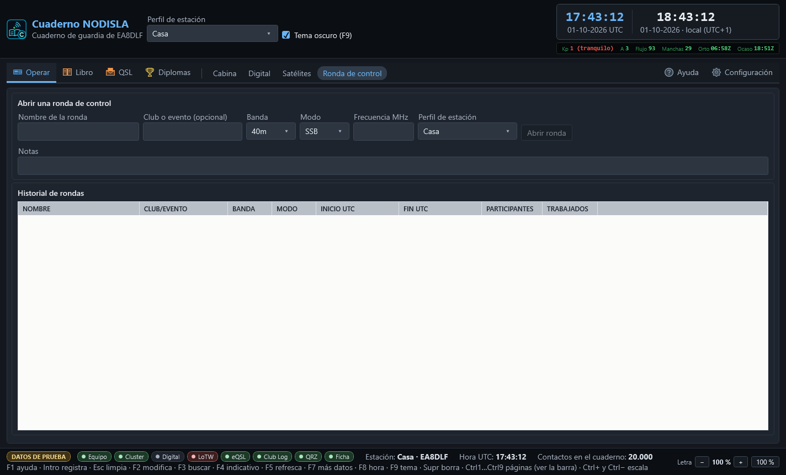

Ronda de control
Operar › Ronda de control (Ctrl 9) es para las rondas de control (net control): una red de radioaficionados con un director, una lista de participantes que van entrando, y un contacto real del cuaderno por cada uno que se confirma.


Abrir una ronda
Mientras no hay ninguna ronda abierta, la página enseña el formulario de arriba: nombre de la ronda, club o evento (opcional), banda, modo, frecuencia y el perfil de estación con el que se va a dirigir. Con «Abrir ronda» empieza la sesión y el formulario se sustituye por la cabecera de la ronda en curso, con su resumen y el botón «Cerrar ronda».
Solo puede haber una ronda abierta a la vez.
Los participantes
Con la ronda abierta aparece un campo para teclear el indicativo y el botón «Añadir a la ronda» (o Intro en el propio campo), que lo suma a la lista con su hora de entrada. Cada fila de la rejilla se puede editar sobre la marcha:
- RST TX y RST RX — los informes intercambiados con ese participante.
- Comentario — cualquier nota suelta.
- «Guardar RST/comentario» — guarda esos cambios sobre la fila sin cerrarla todavía.
- «Confirmar trabajado» — convierte al participante en un contacto real del cuaderno, con la banda, el modo y la frecuencia de la ronda y la hora de entrada de ese participante. La columna TRABAJADO se marca en cuanto esto ocurre. Si el mismo contacto —mismo indicativo, hora, banda y modo— ya estuviera en el cuaderno, el programa lo dice en vez de duplicarlo.
- «Quitar» — elimina de la lista al participante seleccionado sin tocar el cuaderno.
Cerrar la ronda y el historial
«Cerrar ronda» termina la sesión y la manda al historial, que es lo que se ve en esta misma página mientras no hay ninguna ronda abierta: nombre, club o evento, banda, modo, inicio y fin en UTC, cuántos participantes hubo y cuántos se llegaron a confirmar como trabajados.
Reapertura automática
Si el programa se cierra —o se cae— con una ronda todavía abierta, la vuelve a abrir sola al arrancar, exactamente donde se quedó, con toda su lista de participantes. La pantalla no distingue si la ronda acaba de abrirse o si venía de antes: es la misma ronda, y no hace falta recordar cerrarla a mano para no perderla.